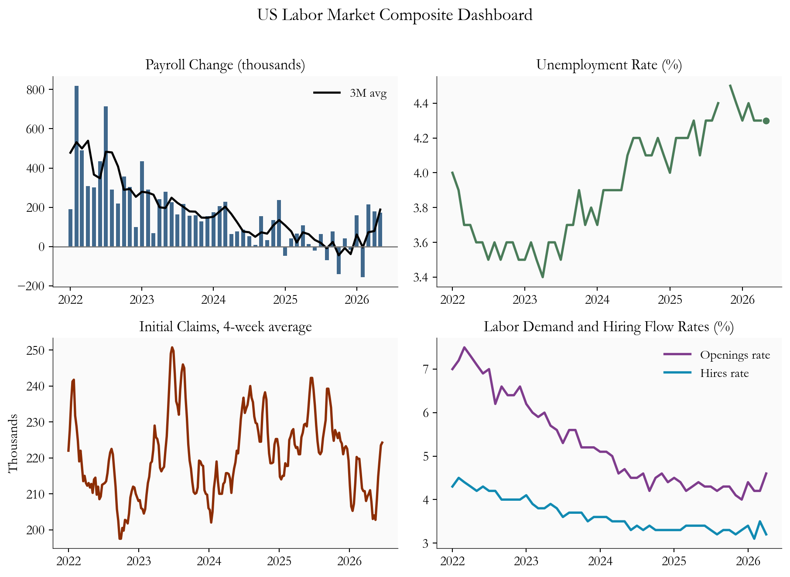
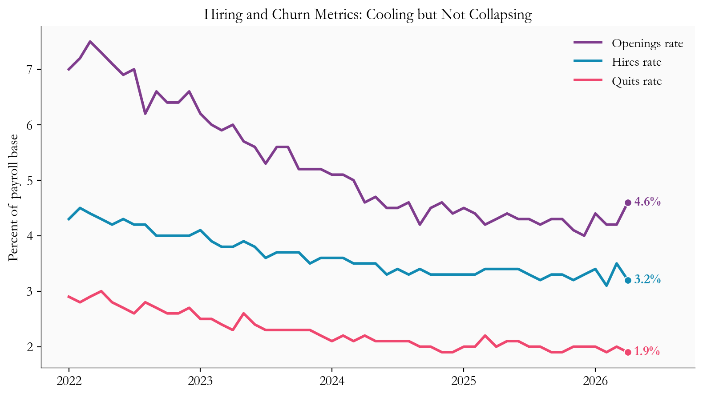
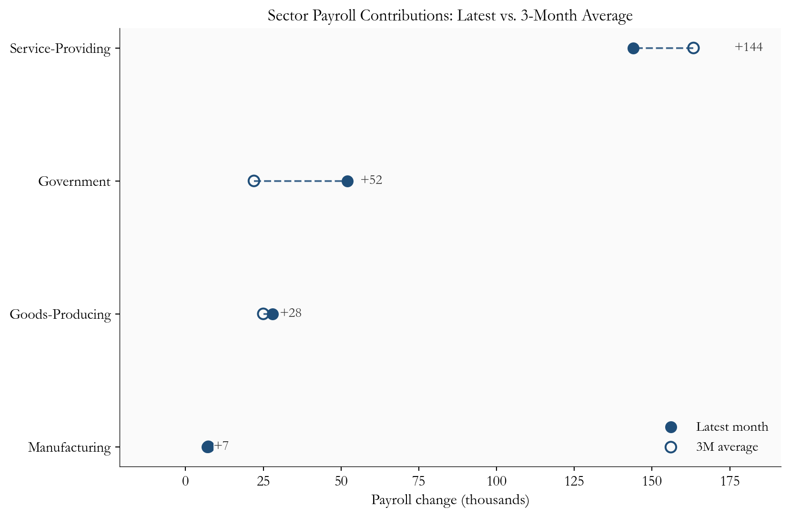
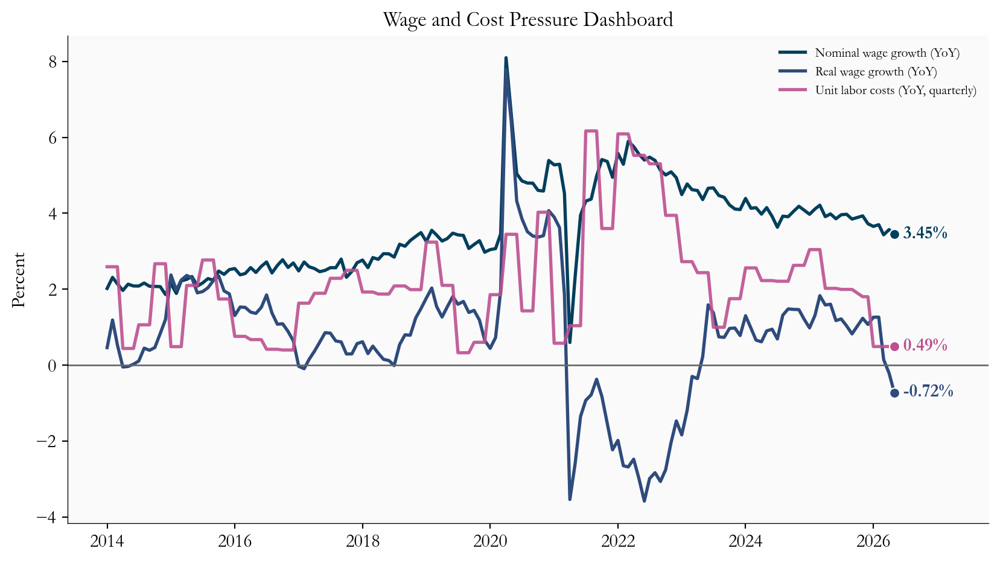
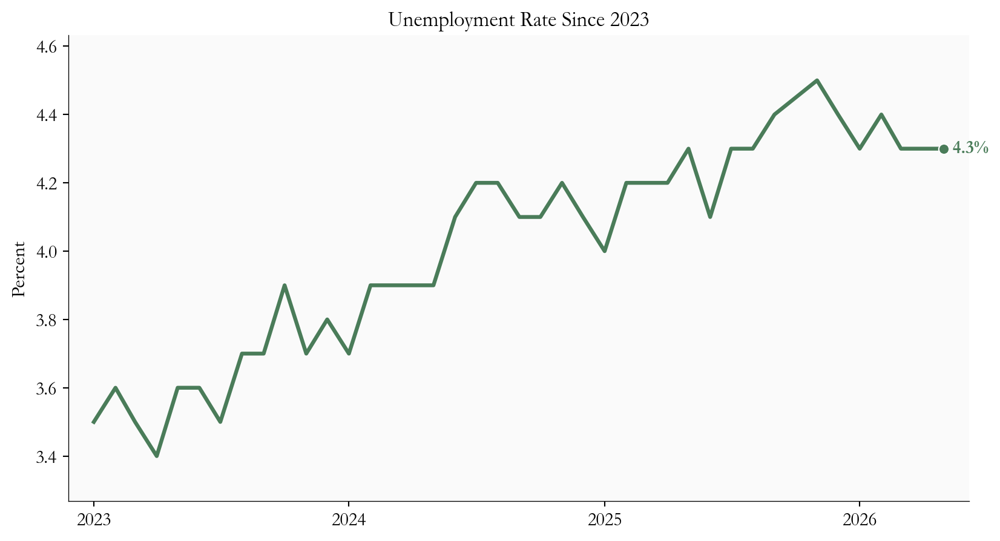

+172k
Payroll change (May 2026)
4.3%
Unemployment rate
224.2k
Initial claims (4-week avg)
-0.7%
Real wage growth (YoY)
Data current as of 2026-06-20 | Source: FRED / BLS
Yoram Gilboa
June 27, 2026
Data current as of 2026-06-20 | Source: FRED / BLS
The headline numbers say the US job market is holding up. The story underneath is more interesting. Employers added 172k jobs in May 2026, close to the 179k added in April 2026, and the unemployment rate stayed near 4.3%. Hiring is still happening. But the quieter parts of the data - how many jobs companies are advertising, how often workers quit for something better, how many people are filing for unemployment - all lean the same way: the labor market is cooling, just slowly.
Why does that gap matter now? Because 2026 is an energy-shock year. When fuel prices jump, they push up headline inflation and squeeze what households can actually buy with their paychecks. That changes the Fed’s calculus. A decision to hold rates steady is no longer about a single strong jobs report. It is a bet that the labor market can absorb pricier energy without either reigniting broad inflation or buckling into sudden layoffs. This post turns that question into a compact dashboard, reading May payrolls, April JOLTS, and weekly claims through 2026-06-20 to separate the durable signal from the monthly noise.
The Python code used to generate each chart is included in this post. The workflow is fully self-contained in this file:
images/Data sources: - FRED API and CSV endpoints: https://fred.stlouisfed.org/ - BLS program pages via FRED mirrored series: https://www.bls.gov/
Start with the part that looks strong. Hiring is still net positive every month, and the three-month average of 188.3k smooths out the bumps to confirm it: this is an economy still adding jobs, not one sliding toward contraction. The unemployment rate of 4.3% has drifted up from its 2023 lows, but it sits in the range you would expect from an economy cooling late in a cycle, not one where labor demand has cracked.
Now look one layer down, at the JOLTS survey, which tracks the plumbing of the job market: openings, hires, and quits. As of April 2026, job openings stand at 4.6% of employment (+0.4 percentage points from the prior month), hires at 3.2% (-0.3), and quits at 1.9% (-0.1). These rates describe flow - how fast workers and jobs move through the economy - rather than the static count of who is unemployed.
Each of these tells you something specific. Because openings and hires are both measured against the same employment base, the gap between them is informative: when openings stay high but hires lag, it means companies are still advertising roles but filling them more slowly. Quits are the market’s confidence gauge - workers only walk away from a paycheck when they believe a better one is within reach, so falling quits signal that people are playing it safe. Jobless claims round out the picture from the exit side; the four-week average has climbed to about 224.2k, +16k higher than a few weeks earlier, though still nowhere near the spikes that mark a recession.
The key insight for policy is that this exact pattern - solid headline, softening internals - can run for a long time. Companies typically trim hiring and pull back job postings well before they resort to outright layoffs. So a strong payroll number and cooling flows are not a contradiction; they are two stages of the same gradual adjustment. For investors, that means a soft set of internal readings does not cancel out a strong jobs print. Both can be true at once, and right now they are.
plot_df = monthly.loc[monthly.index >= "2022-01-01"].copy()
claims_df = weekly_claims.loc[weekly_claims.index >= "2022-01-01"].copy()
fig, axes = plt.subplots(2, 2, figsize=(9.6, 6.8), sharex=False)
axes[0, 0].bar(plot_df.index, plot_df["payroll_change"], color=COLORS["payroll"], alpha=0.85, width=20)
axes[0, 0].plot(plot_df.index, plot_df["payroll_change_3m"], color="black", linewidth=1.8, label="3M avg")
axes[0, 0].axhline(0, color="#777777", linewidth=1)
axes[0, 0].set_title("Payroll Change (thousands)")
axes[0, 0].legend(frameon=False)
axes[0, 1].plot(plot_df.index, plot_df["UNRATE"], color=COLORS["unemp"], linewidth=2)
axes[0, 1].scatter(plot_df.index[-1], plot_df["UNRATE"].iloc[-1], s=45, color=COLORS["unemp"], edgecolors="white", linewidth=0.8, zorder=5)
axes[0, 1].set_title("Unemployment Rate (%)")
axes[1, 0].plot(claims_df.index, claims_df["ICSA_4WMA"] / 1000, color=COLORS["claims"], linewidth=2)
axes[1, 0].set_title("Initial Claims, 4-week average")
axes[1, 0].set_ylabel("Thousands")
axes[1, 1].plot(plot_df.index, plot_df["job_openings_rate"], color=COLORS["openings"], linewidth=2, label="Openings rate")
axes[1, 1].plot(plot_df.index, plot_df["hires_rate"], color=COLORS["hires"], linewidth=2, label="Hires rate")
axes[1, 1].set_title("Labor Demand and Hiring Flow Rates (%)")
axes[1, 1].legend(frameon=False)
for ax in axes.flat:
ax.tick_params(axis="x", labelrotation=0)
ax.xaxis.set_major_locator(mdates.YearLocator())
ax.xaxis.set_major_formatter(mdates.DateFormatter("%Y"))
fig.suptitle("US Labor Market Composite Dashboard", fontsize=15, y=1.01)
plt.tight_layout()
fig.savefig(IMG_DIR / "june-2026-labor-market-dashboard.png", dpi=150, bbox_inches="tight")
hqo = monthly[["job_openings_rate", "hires_rate", "JTSQUR"]].dropna()
hqo = hqo.loc[hqo.index >= "2022-01-01"]
fig, ax = plt.subplots(figsize=(8.4, 4.8))
ax.plot(hqo.index, hqo["job_openings_rate"], color=COLORS["openings"], linewidth=2.2, label="Openings rate")
ax.plot(hqo.index, hqo["hires_rate"], color=COLORS["hires"], linewidth=2.2, label="Hires rate")
ax.plot(hqo.index, hqo["JTSQUR"], color=COLORS["quits"], linewidth=2.2, label="Quits rate")
for col, color in [("job_openings_rate", COLORS["openings"]), ("hires_rate", COLORS["hires"]), ("JTSQUR", COLORS["quits"] )]:
y = hqo[col].iloc[-1]
x = hqo.index[-1]
ax.scatter(x, y, s=40, color=color, edgecolors="white", linewidth=0.8, zorder=5)
ax.text(x, y, f" {fmt2(y)}%", va="center", fontsize=11, color=color, fontweight="bold")
date_range = hqo.index[-1] - hqo.index[0]
ax.set_xlim(right=hqo.index[-1] + date_range * 0.12)
ax.set_title("Hiring and Churn Metrics: Cooling but Not Collapsing")
ax.set_ylabel("Percent of payroll base")
ax.xaxis.set_major_locator(mdates.YearLocator())
ax.xaxis.set_major_formatter(mdates.DateFormatter("%Y"))
ax.legend(frameon=False, loc="upper right")
plt.tight_layout()
One total jobs number can hide very different stories. Two months can post identical payroll gains and still mean opposite things, depending on which parts of the economy did the hiring. So it pays to ask not just how many jobs were added, but where. The breakdown here is deliberately broad - goods producers, service providers, government, and manufacturing - rather than a fine-grained industry map, but even at this level the composition is revealing.
Some corners of the job market are defensive. Health care, education, and public administration keep hiring fairly steadily even when growth slows, because the demand behind them does not rise and fall with the business cycle. Others are transaction-intensive: retail, transportation and warehousing, and parts of manufacturing move with consumer spending and inventory swings, so they feel a slowdown first.
This mix matters for two reasons. First, it tells you how durable the gains are. If most of the hiring is concentrated in just a few sectors, the cushion can vanish quickly if those sectors turn. Broad-based hiring is sturdier than a narrow rally. Second, it shapes how inflation flows through wages. Different sectors have different bargaining dynamics and labor intensity, so the same headline gain can put more or less upward pressure on pay depending on where it lands.
The chart below uses a simple device to surface all this: it plots each sector’s latest month against its own three-month average. The distance between the two dots shows where hiring is speeding up or slowing down relative to its recent trend, which keeps a single noisy month from dominating the read. The takeaway is that the aggregate still looks resilient, even if this broad cut cannot match the detail of a full industry-breadth dashboard.
sector_plot = pd.DataFrame({
"Latest": sector_latest,
"3M avg": sector_3m,
}).sort_values("Latest")
fig, ax = plt.subplots(figsize=(8.8, 5.8))
y = np.arange(len(sector_plot))
for i in y:
ax.plot(
[sector_plot["3M avg"].iloc[i], sector_plot["Latest"].iloc[i]],
[i, i],
color="#1f4e79",
linewidth=1.5,
linestyle="--",
alpha=0.8,
zorder=2,
)
ax.scatter(sector_plot["Latest"], y, color="#1f4e79", s=70, label="Latest month", zorder=4)
ax.scatter(
sector_plot["3M avg"],
y,
facecolors="none",
edgecolors="#1f4e79",
linewidth=1.5,
s=70,
label="3M average",
zorder=5,
)
for i, (name, latest, avg) in enumerate(zip(sector_plot.index, sector_plot["Latest"], sector_plot["3M avg"])):
pad = max(2.0, max(abs(latest), abs(avg)) * 0.08)
if name == "Service-Providing":
x = max(latest, avg) + pad
ha = "left"
else:
ha = "left" if latest >= 0 else "right"
x = latest + pad if latest >= 0 else latest - pad
ax.text(
x,
i,
f"{latest:+.0f}",
va="center",
ha=ha,
fontsize=11,
color="#333",
zorder=6,
bbox=dict(facecolor="#fafafa", edgecolor="none", pad=0.25, alpha=0.9),
)
ax.set_yticks(y)
ax.set_yticklabels(sector_plot.index)
ax.set_xlabel("Payroll change (thousands)")
ax.set_title("Sector Payroll Contributions: Latest vs. 3-Month Average")
ax.legend(frameon=False, loc="lower right")
ax.margins(x=0.18)
plt.tight_layout()
Wages tell the same split-screen story. On paper, pay is still rising: nominal wage growth runs near 3.4% a year. But headline inflation is running hotter, near 4.2%, so once you adjust for rising prices, real wage growth has already turned negative, at roughly -0.7% year over year. This is the energy shock showing up in household budgets: paychecks are growing, but the cost of living is growing faster, so workers are quietly losing ground. And if higher fuel costs spread further - into transportation, goods, and the services tied to housing - that squeeze deepens, no deep recession required.
wr = monthly[["ahe_yoy", "real_wage_yoy", "ulc_yoy"]].dropna()
wr = wr.loc[wr.index >= "2014-01-01"]
fig, ax = plt.subplots(figsize=(8.8, 5.0))
ax.plot(wr.index, wr["ahe_yoy"], color=COLORS["wage_nom"], linewidth=2, label="Nominal wage growth (YoY)")
ax.plot(wr.index, wr["real_wage_yoy"], color=COLORS["wage_real"], linewidth=2, label="Real wage growth (YoY)")
ax.plot(wr.index, wr["ulc_yoy"], color=COLORS["ulc"], linewidth=2, alpha=0.9, label="Unit labor costs (YoY, quarterly)")
ax.axhline(0, color="#666", linewidth=1)
for col, color in [("ahe_yoy", COLORS["wage_nom"]), ("real_wage_yoy", COLORS["wage_real"]), ("ulc_yoy", COLORS["ulc"])]:
y = wr[col].iloc[-1]
x = wr.index[-1]
ax.scatter(x, y, s=40, color=color, edgecolors="white", linewidth=0.8, zorder=5)
ax.text(
x,
y,
f" {fmt2(y)}%",
va="center",
fontsize=11,
color=color,
fontweight="bold",
)
date_range = wr.index[-1] - wr.index[0]
ax.set_xlim(right=wr.index[-1] + date_range * 0.12)
ax.set_title("Wage and Cost Pressure Dashboard")
ax.set_ylabel("Percent")
ax.xaxis.set_major_locator(mdates.YearLocator(2))
ax.xaxis.set_major_formatter(mdates.DateFormatter("%Y"))
ax.legend(frameon=False, loc="upper right", fontsize=8)
plt.tight_layout()
Put yourself in the Fed’s chair. An energy shock leaves you facing risk from both directions. Cut rates too soon and you could re-fuel inflation just as fuel prices are already lifting it. Wait too long and you could miss a labor market that is quietly weakening. With the jobs data still firm, there is no case for an urgent rate cut - but with fuel prices clouding the inflation outlook and eroding real incomes, there is no case for committing to a fixed path either. Holding steady while watching the flow data closely is the more defensible move, because it keeps the Fed’s options open.
Over the next six to eight weeks, three questions will decide which way the data break:
For markets, the honest framing is not recession versus no recession. It is a divergence to be navigated. As long as the job market stays resilient and the inflation passthrough stays contained, bond markets can keep pricing a slow, unhurried path of rate cuts. But if hiring deteriorates while energy keeps headline inflation hot, pricing could get choppy, because growth would be flashing one signal and inflation the opposite.
The final chart strips the picture back to the simplest labor-market signal: the unemployment rate itself. It has risen from its post-pandemic lows, but it is still low in absolute terms and far from the levels that usually define a clear labor-market break. That is exactly the kind of backdrop that lets the Fed stay patient while continuing to watch for further softening.
u = monthly[["UNRATE"]].dropna().copy()
recent = u.loc[u.index >= "2023-01-01"].copy()
fig, ax = plt.subplots(figsize=(8.8, 4.8))
ax.plot(recent.index, recent["UNRATE"], color=COLORS["unemp"], linewidth=2.4)
ax.scatter(recent.index[-1], recent["UNRATE"].iloc[-1], s=42, color=COLORS["unemp"], edgecolors="white", linewidth=0.8, zorder=5)
ax.text(
recent.index[-1],
recent["UNRATE"].iloc[-1],
f" {recent['UNRATE'].iloc[-1]:.1f}%",
va="center",
fontsize=11,
color=COLORS["unemp"],
fontweight="bold",
)
ax.set_title("Unemployment Rate Since 2023")
ax.set_ylabel("Percent")
ax.xaxis.set_major_locator(mdates.YearLocator())
ax.xaxis.set_major_formatter(mdates.DateFormatter("%Y"))
ax.margins(x=0.03, y=0.12)
plt.tight_layout()
For Fed policy: The data call for patience, not panic. Solid payrolls and low unemployment take the urgency out of any near-term rate cut. But cooling hiring flows and an unsettled energy picture argue for watching the incoming data closely - especially the July CPI and the next jobs report - rather than pre-committing to a move.
For inflation passthrough: Households have little cushion left. Real wages are already running near -0.7% a year, meaning purchasing power is slipping even with people employed. If energy costs bleed into the stickier, core parts of inflation, that erosion can deepen well before any meaningful payroll losses show up.
For rates and risk assets: A steady job market with cooling churn keeps the soft-landing story alive, but the energy shock narrows the path. The thing to watch is not simply whether jobs come in stronger or weaker. It is this specific tension - strong payrolls alongside slowing hiring - and whether it resolves by hiring re-accelerating or by labor weakness arriving on a delay.
The June 2026 labor market is resilient on the surface and cautious underneath. Payrolls and unemployment still point to an economy that is expanding, while the trends in hires, openings, and claims point to a job market that is gradually losing momentum in a higher energy-cost world. Taken together, that mix supports a Fed that holds rates steady and keeps its summer decisions tied tightly to the data.
The decisive test comes when the next jobs report meets the July CPI. If hiring holds broad and the energy shock stays contained in the inflation numbers, the soft landing stays on the table. If hiring slows further while energy keeps headline inflation elevated, the odds of policy missteps and market turbulence climb. For now, the dashboard reads steady - but it is worth watching every gauge.
| Series | Description | Source |
|---|---|---|
| PAYEMS, UNRATE | Total nonfarm payrolls and unemployment rate | FRED / BLS |
| ICSA, CCSA | Initial and continuing jobless claims | FRED / BLS (DOL) |
| JTSJOR, JTSHIR, JTSQUR | Job openings, hires, and quits rates (JOLTS) | FRED / BLS |
| CES0500000003, CPIAUCSL | Average hourly earnings and headline CPI | FRED / BLS |
| ULCNFB | Unit labor costs, nonfarm business | FRED / BLS |
| USGOOD, SRVPRD, USGOVT, MANEMP | Broad payroll aggregates for sector contributions | FRED / BLS |
Data current as of 2026-06-20.